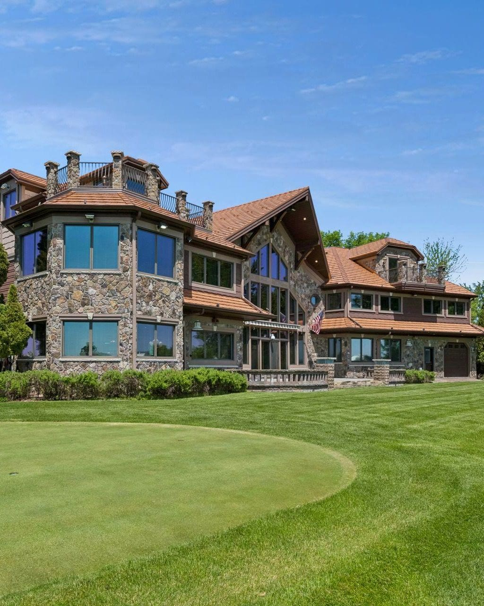

The Upper Lake of Lake Minnetonkaand the stone house on Enchanted Island
Out on the west end of Lake Minnetonka, on Enchanted Island, there is a stone house that one family built and kept for decades. In November it sold for the first time. Here is a little more of its story, a map of where it sits, and how this end of the lake fits together.
Geoffrey Serdar

Sold November 13, 2026 for $4,890,000
Steve and Pamela Anderson built this house in the late 1980s, and it stayed theirs from then on. It had never been on the market before this sale.
Steve started Acoustical Surfaces, the soundproofing company in Chaska, in 1980. Later he made the gift that began a scholarship in memory of his mother, Gloria, for students at Westonka and Orono high schools. Steve passed away in 2024, and this fall the family sold the house.
There is a putting green on the lawn and a private beach down at the water.
If you knew the Andersons and something here isn’t right, text me and I’ll fix it.
The pin is the stone house, on the south shore of Enchanted Island. The Narrows, where the Upper Lake meets the Lower Lake, is off to the east.
The week it sold
The week of November 9 to 15, this was one of two homes that closed in Mound, counting the whole town, on the water or not. The other sold for $850,000. Minnetrista, Spring Park, Orono and Shorewood, the other towns that touch the Upper Lake, had no closed sales that week.
Others are still in the works. As of November 16, 10 homes in Mound and 17 in Minnetrista were under contract but not closed yet, and deals like that can still fall apart. I post every closed sale around the lake each Monday, town by town, on the weekly list.
How the Upper Lake fits together
Start with the name. The Upper Lake is not the upper part on a map. It sits low and to the west, and the Lower Lake is the big water to the north and east. The names follow the water. Most of it comes in through Six Mile Creek at Halsted Bay, on the far west end, and it leaves at Gray’s Bay on the east, where it spills into Minnehaha Creek. Upstream is upper.
For a long time the two halves barely touched. Where the Narrows bridge now runs between Orono and Tonka Bay, there was only a shallow, mucky creek. People called it Hull’s Narrows, after Reverend Stephen Hull, who had a claim beside it. In 1873 it was dredged wide enough for steamboats, and the Governor Ramsey, the lake’s first, came through carrying visitors out to what was then the remote Upper Lake. The boats kept getting bigger, so a wider channel was cut a little to the north, and it opened in 1887. That is the Narrows you cross today. The old channel is still there, partly filled in for the highway, and it goes by the name Old Channel Bay.
Come through the Narrows heading west and the water breaks into bays and islands. Carman Bay opens first, and Spring Park Bay and Cooks Bay reach in toward Spring Park and Mound. Farther out you are among the islands. Phelps Island is one, and Enchanted Island lies just south of it, with Phelps Bay between them. Long before any of the houses, the Dakota held Enchanted Island as a sacred place. A tornado in 1906 took down much of the old timber on these islands, and the cottages and homes built after it gave them the feel they have now. South of Enchanted Island the water opens wide toward Smithtown Bay and the Victoria side, and Halsted Bay is the last water to the west.
Five towns touch this water: Mound, Minnetrista, Spring Park, Orono and Shorewood. The lines between them can surprise you. The stone house has a Mound mailing address, but the county lists it in Minnetrista. Out here, the name on the envelope and the city on the tax bill don’t always match.
If you are reading from another state, here is the picture that helps. Lake Minnetonka is not one bowl of water with one town around it. It is a string of bays, and each end of it keeps its own pace. I live in Excelsior, on Minnewashta Park, not out on this water. What I can do is tell you which town a shore really belongs to, what has sold, and what a home here would likely bring. The numbers change every week. The shape of the water doesn’t.
The Upper Lake is the west end of Lake Minnetonka. It meets the Lower Lake at the Narrows, the channel between Orono and Tonka Bay.
Why is it called the Upper Lake when it sits south and west on the map?
Because the names follow the water, not the compass. Most of the lake’s water comes in through Six Mile Creek at Halsted Bay on the west end and leaves at Gray’s Bay on the east, into Minnehaha Creek. The west end is upstream, so it is the Upper Lake.
Which towns touch the Upper Lake?
Mound, Minnetrista, Spring Park, Orono and Shorewood.
Where is Enchanted Island?
Enchanted Island is in the Upper Lake, just south of Phelps Island, with Phelps Bay between the two. The stone house that sold in November 2026 has a Mound mailing address and sits on the Minnetrista tax roll.
Send me the address. I’ll look at the recent sales near you myself and write you a one-page read on what your home would likely sell for today. It isn’t an automated estimate, and there’s nothing you have to do with it.
Please add your first name and a working email.
By submitting, you agree Serdar+Partners at Compass may contact you by call or text at the number you provide. Consent is not required to buy or sell. Reply STOP to opt out. Privacy
Thank you. I’ll look at the recent sales near you and send your read soon.